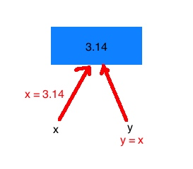
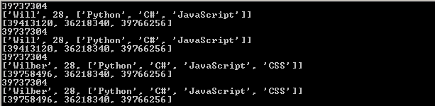
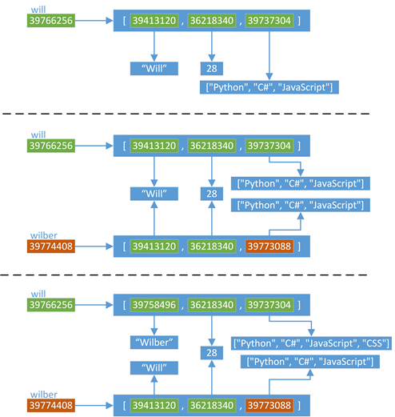

我们知道，对象赋值实际上是简单的对象引用。也就是说，当你创建了一个对象，然后把它赋值给另外一个变量的时候，Python并没有拷贝这个对象，而是拷贝了这个对象的引用。
举例说明：
x = 3.14
y = x
语句x = 3.14创建了一个浮点型对象并将其引用赋值给x。
x是第一个引用。
语句y = x创建了一个指向同一对象的别名y，而事实上并没有为y创建一个新对象(该对象引用计数变成了2)。

对象赋值
直接看一段代码：
will = ["Will", 28, ["Python", "C#", "JavaScript"]]
wilber = will
print id(will)
print will
print [id(ele) for ele in will]
print id(wilber)
print wilber
print [id(ele) for ele in wilber]
will[0] = "Wilber"
will[2].append("CSS")
print id(will)
print will
print [id(ele) for ele in will]
print id(wilber)
print wilber
print [id(ele) for ele in wilber]
代码的输出为：

下面来分析一下这段代码：
- 首先，创建了一个名为will的变量，这个变量指向一个list对象，从第一张图中可以看到所有对象的地址（每次运行，结果可能不同）
- 然后，通过will变量对wilber变量进行赋值，那么wilber变量将指向will变量对应的对象（内存地址），也就是说"wilber is will"，"wilber[i] is will[i]"
- 可以理解为，Python中，对象的赋值都是进行对象引用（内存地址）传递
- 第三张图中，由于will和wilber指向同一个对象，所以对will的任何修改都会体现在wilber上
- 这里需要注意的一点是，str是不可变类型，所以当修改的时候会替换旧的对象，产生一个新的地址39758496

浅拷贝
下面就来看看浅拷贝的结果：
import copy
will = ["Will", 28, ["Python", "C#", "JavaScript"]]
wilber = copy.copy(will)
print id(will)
print will
print [id(ele) for ele in will]
print id(wilber)
print wilber
print [id(ele) for ele in wilber]
will[0] = "Wilber"
will[2].append("CSS")
print id(will)
print will
print [id(ele) for ele in will]
print id(wilber)
print wilber
print [id(ele) for ele in wilber]
代码的输出结果如下：

分析一下这段代码：
- 首先，依然使用一个will变量，指向一个list类型的对象
- 然后，通过copy模块里面的浅拷贝函数copy()，对will指向的对象进行浅拷贝，然后浅拷贝生成的新对象赋值给wilber变量
- 浅拷贝会创建一个新的对象，这个例子中"wilber is not will"
- 但是，对于对象中的元素，浅拷贝就只会使用原始元素的引用（内存地址），也就是说"wilber[i] is will[i]"
- 当对will进行修改的时候
- 由于list的第一个元素是不可变类型，所以will对应的list的第一个元素会使用一个新的对象39758496
- 但是list的第三个元素是一个可不类型，修改操作不会产生新的对象，所以will的修改结果会相应的反应到wilber上
 总结一下，当我们使用下面的操作的时候，会产生浅拷贝的效果：
总结一下，当我们使用下面的操作的时候，会产生浅拷贝的效果：
- 使用切片[:]操作
- 使用工厂函数（如list/dir/set）
- 使用copy模块中的copy()函数
例如：
will = ["Will", 28, ["Python", "C#", "JavaScript"]]
willber = will[:]
wiww = list(will)
深拷贝
最后来看看深拷贝：
import copy
will = ["Will", 28, ["Python", "C#", "JavaScript"]]
wilber = copy.deepcopy(will)
print id(will)
print will
print [id(ele) for ele in will]
print id(wilber)
print wilber
print [id(ele) for ele in wilber]
will[0] = "Wilber"
will[2].append("CSS")
print id(will)
print will
print [id(ele) for ele in will]
print id(wilber)
print wilber
print [id(ele) for ele in wilber]
代码的输出结果如下：
分析一下这段代码：
- 首先，同样使用一个will变量，指向一个list类型的对象
- 然后，通过copy模块里面的深拷贝函数deepcopy()，对will指向的对象进行深拷贝，然后深拷贝生成的新对象赋值给wilber变量
- 跟浅拷贝类似，深拷贝也会创建一个新的对象，这个例子中"wilber is not will"
- 但是，对于对象中的元素，深拷贝都会重新生成一份（有特殊情况，下面会说明），而不是简单的使用原始元素的引用（内存地址）
- 例子中will的第三个元素指向39737304，而wilber的第三个元素是一个全新的对象39773088，也就是说，"wilber[2] is not will[2]"
- 当对will进行修改的时候
- 由于list的第一个元素是不可变类型，所以will对应的list的第一个元素会使用一个新的对象39758496
- 但是list的第三个元素是一个可不类型，修改操作不会产生新的对象，但是由于"wilber[2] is not will[2]"，所以will的修改不会影响wilber

拷贝的特殊情况
其实，对于拷贝有一些特殊情况：
- 对于非容器类型（如数字、字符串、和其他'原子'类型的对象）没有拷贝这一说
- 也就是说，对于这些类型，"obj is copy.copy(obj)" 、"obj is copy.deepcopy(obj)"
- 如果元祖变量只包含原子类型对象，则不能深拷贝，看下面的例子

总结
本文介绍了对象的赋值和拷贝，以及它们之间的差异：
* Python中对象的赋值都是进行对象引用（内存地址）传递
* 使用copy.copy()，可以进行对象的浅拷贝，它复制了对象，但对于对象中的元素，依然使用原始的引用.
* 如果需要复制一个容器对象，以及它里面的所有元素（包含元素的子元素），可以使用copy.deepcopy()进行深拷贝
* 对于非容器类型（如数字、字符串、和其他'原子'类型的对象）没有被拷贝一说
* 如果元祖变量只包含原子类型对象，则不能深拷贝.
文章引用：
https://www.cnblogs.com/wilber2013/p/4645353.html